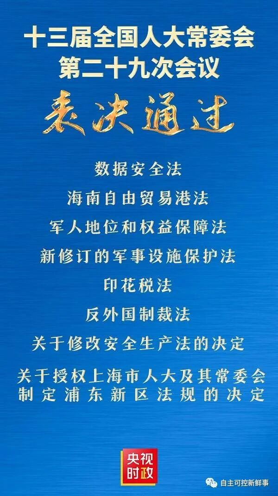
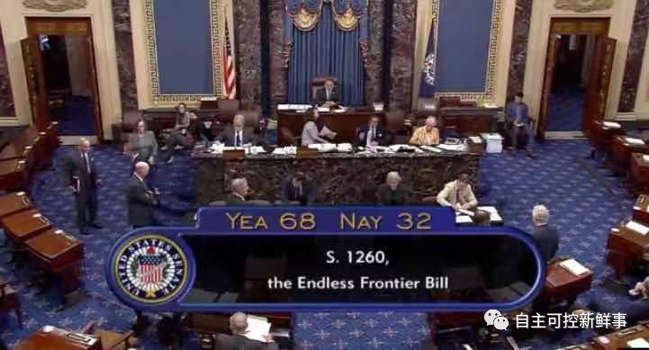

来而不往非礼也，反击来了！
6月10日消息，今天，全国人大常委会第二十九次会议通过了多项法案及两项决定。其中包括《中华人民共和国反外国制裁法》，这是人们期待已久的重大立法。

今年以来，美国等国家接连以“涉军”等借口对中国及国内高科技企业实施制裁，虽然中国在第一时间反制裁，但现在有了《反外国制裁法》，我们的回击必将更加精准有力，并且迅捷。
不能指望美国会放弃单边制裁这种霸权手段，但中国决不是好欺负的。《反外国制裁法》就是一个无形的巨大威慑，它告诉那些想挑衅中国的找茬者，必将为它们的行为付出惨痛代价！
那么，《反外国制裁法》的通过，将带来哪些变化？中美会不会进入制裁与反制裁的恶性升级？我们听一听相关专家怎么说。
有法可依
中国政法大学教授 霍政欣：
《反外国制裁法》的颁布实施，为之后可能的反制实践提供了法律依据。
在今天这个全球化时代，大国博弈大多以所谓法律的形式展开。有了《反外国制裁法》，我们自己的法律工具箱就更为充实。
一方面，《反外国制裁法》的主要目的是为中国的行政执法部门、司法机构展开反制裁措施提供充分的立法保障。
之前我们积累了一些反制裁的实践，比如在2020年9月，我国出台《不可靠实体清单规定》。但是这都属于行政层面上的反制裁举措，法律效果也不甚明确。
我们缺乏一部综合性的国家法律为反制裁措施提供全方位的法律支撑和立法上的授权。可以说，《反外国制裁法》的颁布完善了我国的涉外法律体系。
另一方面，如果别国试图制裁我们，将会有所顾忌。
北航法学院副教授 田飞龙：
这部法的内容主要在两个方面产生作用：一是阻断。及时阻止外国非法制裁可能产生的损害，让那些制裁不发生效力。二是反制裁。对于对方的制裁，我们将根据需要选择同等制裁，或者让对方更加痛苦的反制裁。
《反外国制裁法》为此提供了很多工具，比如限制出入境，冻结资产账户，对有关实体和个人进行制裁、使之和外国制裁相对等。
有的放失
北航法学院副教授 田飞龙：
从《反外国制裁法》的名称就可以看出，它的针对性是非常强的。
从特朗普上台以来，美国就不断朝新冷战方向靠近。特朗普政府基于国内法对中国实施长臂管辖和非法制裁；拜登政府变本加厉，成了“特朗普+”。
这些情况都在倒逼我们的立法机关，必须要采取法律武器，进行对等反击，维护我们的正当权益，也包括维护我们企业在海外的合法权益，同时也阻止其他国家跟风制裁。
中国政法大学教授 霍政欣：
美国从特朗普时期开始就回归零和博弈的地缘竞争思维，把中国视为最主要的战略竞争者，开始全方位打压和遏制中国。拜登政府基本延续了特朗普时期对华战略的地缘竞争思维。
今年以来，我们面临的外部压力持续增加，英国、澳大利亚、欧盟、加拿大等几乎协调一致地、在同一时间段对中国的有关国家机关、企业、官员等实施制裁，这是过去从没有过的。
巧合的是，今天下午全国人大常委会通过《反外国制裁法》，美国参议院昨天刚通过了“2021年美国创新与竞争法案”。后者在很大程度上是针对中国的，它就是从所谓的法律途径加大对中国遏制的力度。

在这样的外部环境下，我们出台《反外国制裁法》，通过法律途径对外开展法律博弈，是非常必要，也是非常及时的。
站得住脚
全国人大关于《反外国制裁法》立法的有关报告还提到，“根据有关工作安排，全国人大常委会法制工作委员会认真研究各方面提出的立法建议，总结我国反制实践和相关工作做法，梳理国外有关立法情况，征求中央和国家有关部门意见，起草并形成了《中华人民共和国反外国制裁法（草案）》。”
中国政法大学教授 霍政欣：
这部法律的名称不是《对外制裁法》，而是《反外国制裁法》，恰恰说明这部法律本质上属于反制，而不是主动进攻。外界说，我们颁布《反外国制裁法》属于“战狼外交”“国强必霸”，是站不住的。
我们的《反外国制裁法》不是干涉他国内政，而是维护国家主权、捍卫国际法基本原则。这部立法既具有反制性质，在国际法上也有正当性。
参考链接：
http://henan.china.com.cn/news/2021-06/10/content_41589678.htm
https://mp.weixin.qq.com/s/I-C1KzKdRIRZ2HnVG8jM0g